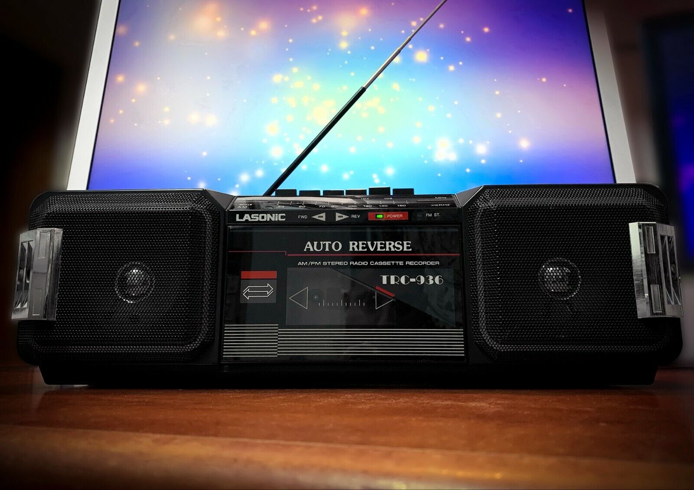
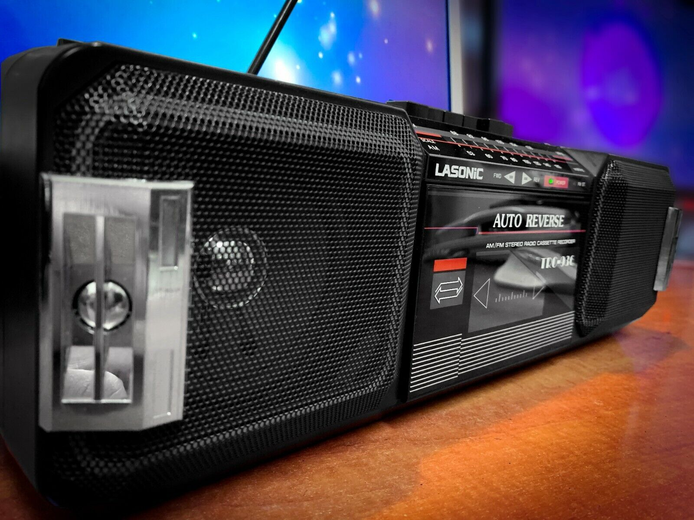

Lasonic produced some of the most popular boomboxes amongst collectors. Most of them were manufactured in Taiwan by Yung Fu Technology Electrical Corporation. During the late 70s and early 80s, they made silver colored models with fairly good build quality. But later, during the mid 80s, they started selling larger, black models with more fragile construction. I am referring to the TRC-931, 935, 951, and 975. These earned the nickname “big empty black boxes”, which refers to a cavernous shell with little internal electronics to justify the large shell. Care should be taken when shipping these Lasonics, because the transformer might break loose from its thin internal mounts, causing it to act like a wrecking ball. However their attractive colorful graphics, large size, strong bass, and flashy looks nevertheless caused these models to remain popular amongst both collectors and casual consumers alike.

Lasonic Electronics Corporation started its portable audio business in 1978. After many years of hard work, dedication, and innovation, they have become one of the leading manufacturers in the consumer electronics market.
The Lasonic TRC-931 boombox is one of the Holy Grail boomboxes produced in 1985 by Lasonic or Yung Fu Electrical Appliances. It can be seen in many early breakdancing movies and current music videos like The Clerks or music videos like Got the Life by Korn, Boombox by The Lonely Island and Swagger Jagger by Cher Lloyd.
The Lasonic TRC-931 enjoyed one of the longest production runs in boombox history. Starting in the early 80’s, this model had 3 design generations, and then was re-born in the late 2000’s as the Lasonic i-931. The version shown below is one of the first generation models. There’s something about its flashy looks, colorful graphics, and sparkly chrome that simply begs to be added to your collection. Looks that good can’t be ignored.

It actually sounds pretty good despite its cheap construction. The 8” woofers have soft, flexible surrounds for good bass. The packaging said “Peak Music Power 2x50W”, but everyone knows peak music power is nonsense. The owners manual says continuous RMS output is 2x15W. Assuming that’s true, that’s actually quite good for that time period. Consider that the Sharp GF-777 only made 2x12W.